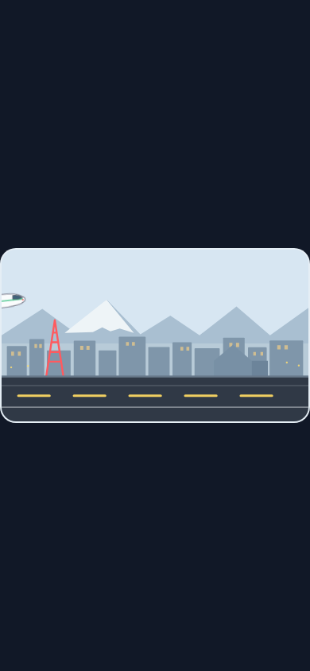
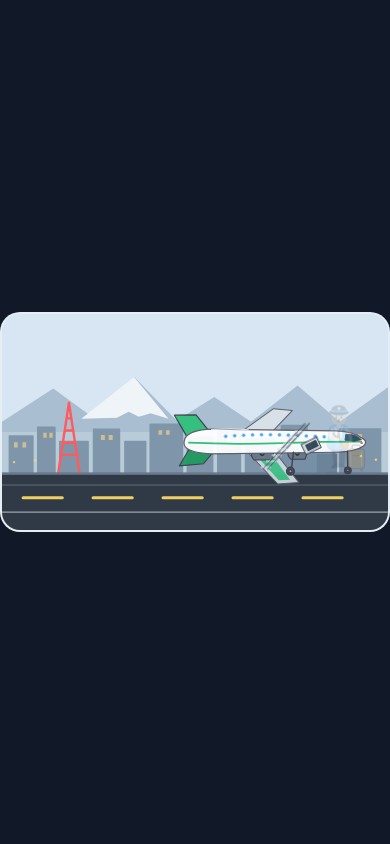
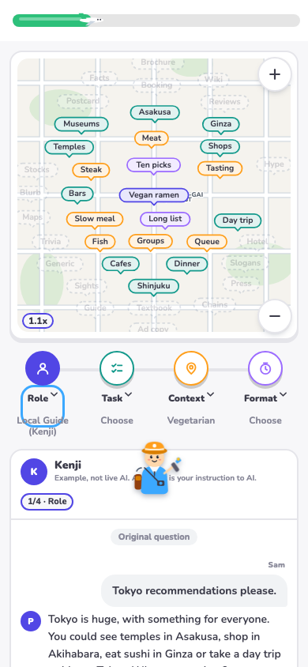
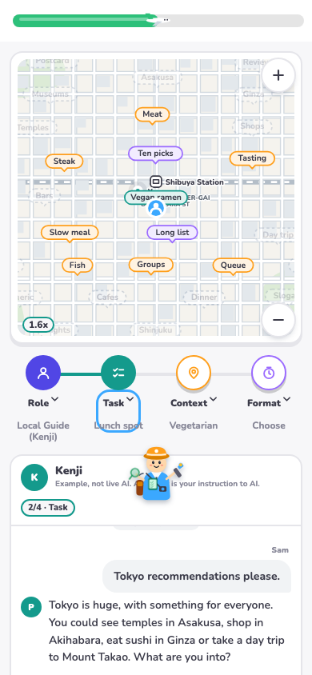
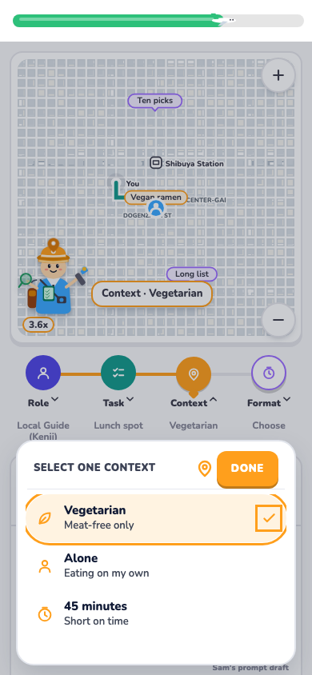
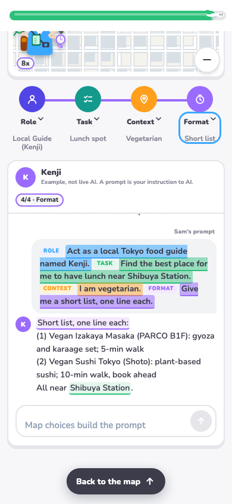
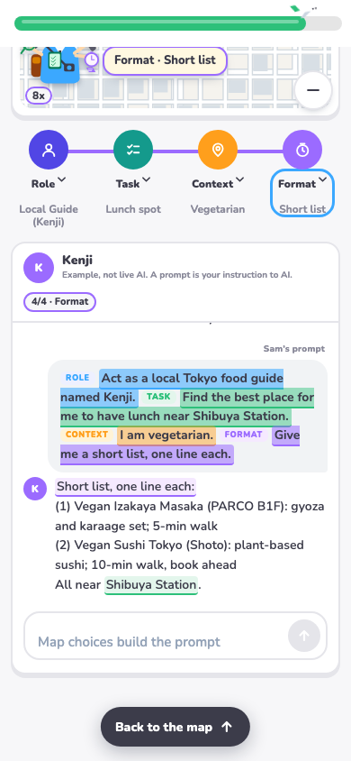

Tokyo lesson motion QA
Phone viewport: 390 × 844. Normal and reduced-motion captures, in story order.
00 · Plane approaches Tokyo
The plane is visible on final approach.
585 ms from page load
01 · Plane lands; Sam exits hungry
The parked plane and traveler reach the Tokyo arrival scene.
6621 ms from page load
02 · Role: chooses a local guide
The character opens Role, selects Kenji, and adds the role to the prompt.
17029 ms from page load
03 · Task: asks for lunch
The character selects Lunch spot and adds the food request.
31558 ms from page load
04 · Context: filters for vegetarian food
The character chooses Vegetarian and adds that context.
42358 ms from page load
05 · Format: builds the final prompt and answer
The completed prompt asks for a short list; Kenji replies with Tokyo food options.
58721 ms from page load
06 · Reduced motion: plane lands
Reduced travel still shows the plane arrive and land.
6538 ms from page load
07 · Reduced motion: prompt reaches the food answer
All four prompt gates complete without freezing at the landing scene.
8992 ms from page load